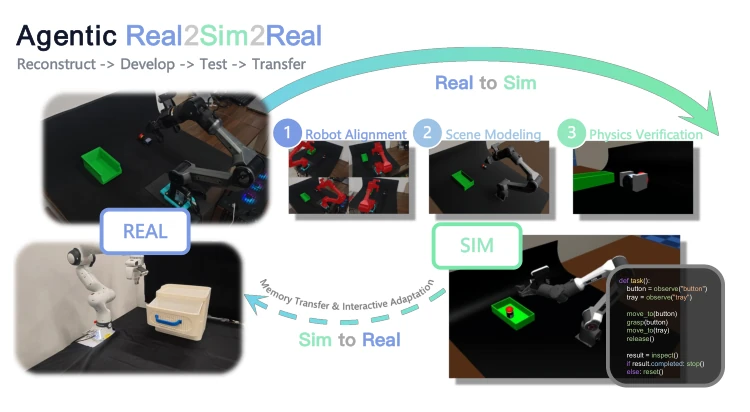
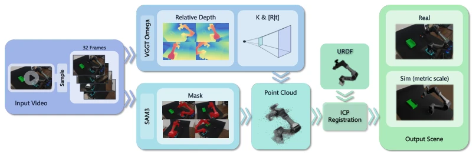
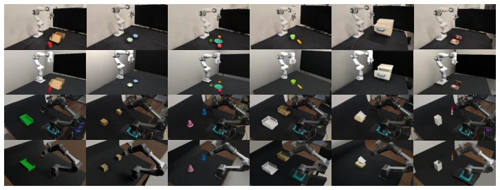

This paper proposes an 'Agent Pipeline' for the Sim-to-Real challenge in Embodied AI. Utilizing Codex Agent to both repair 3D scenes and write control code, it attempts to compensate for 'machine' perception deficiencies with 'human brain' logic. The highlight is the introduction of robot URDF anchor scale, which solves common scale drift in reconstruction, along with a three-stage strategy iteration to enhance robustness, even transferring experience memory. However, the drawbacks are also striking: heavy reliance on closed-source large models (GPT-6 Astra), reproducibility largely depends on metaphysics, and Agent inference is slow, with real-time performance potentially inferior to end-to-end VLA. The paper itself admits model behavior varies across different devices. Nevertheless, achieving a real success rate of 80% of the simulation level is indeed superior to methods that are 'fierce in simulation but stationary on real hardware', giving some credit to the code strategy faction.
研究动机Motivation
真实机器人试错成本高，仿真又难对齐。现有工作如Re3Sim (Han et al., 2025) 或 SimFoundry (Ranawaka et al., 2026) 往往把场景重建和策略开发割裂，导致仿真里的成功在真机上失效。Code as Policies (Liang et al., 2023) 虽有代码策略，但缺乏对特定真实场景的精细重建。本文旨在打通“重建-开发-执行”闭环，确保仿真场景支持任务交互，且策略能处理真实观测。特别是针对视频重建的尺度问题，现有方法常忽略机器人几何参考，导致物理仿真不可用。
Real robot trial-and-error costs are high, and simulation alignment is difficult. Existing works such as Re3Sim (Han et al., 2025) or SimFoundry (Ranawaka et al., 2026) often separate scene reconstruction and strategy development, causing success in simulation to fail on real machines. Code as Policies (Liang et al., 2023) has code strategies but lacks fine reconstruction for specific real scenes. This paper aims to connect the 'Reconstruction-Development-Execution' closed loop, ensuring simulation scenes support task interaction, and strategies can handle real observations. Especially regarding the scale problem in video reconstruction, existing methods often ignore robot geometric references, leading to unusable physics simulation.
The overall process is divided into three steps. First is Real-to-Sim reconstruction: using video and known robot URDF, extracting point clouds via VGGT-Ω and SAM3, ICP alignment restores real scale, then Codex Agent iteratively optimizes geometry and material in Blender, MuJoCo verifies physical interaction. Second is strategy development: Codex Agent writes code, divided into three stages (privileged information, nominal interface, randomization), strategy supports multiple observation actions within a single call. Finally is Sim-to-Real: strategy plus experience memory transferred to real machine, combined with safety checks and real-time feedback correction.

Figure 1: Agentic RSR overview. An agent uses real observations and known robot geometry to reconstruct a metrically aligned scene and check task-relevant interactions. A policy agent develops and tests an executable policy in simulation, then transfers it with experience memory to the real robot for feedback-driven adaptation.

Figure 2: Recovering metric scale from known robot geometry. Video-estimated depth, camera parameters, and robot masks are used to construct an observed robot point cloud. Aligning this point cloud with the known URDF geometry yields metric depth and camera poses expressed in the robot-base frame.
实验Experiments
18个真实场景，Franka和Piper两机器人。重建指标Depth MAE 0.1057m，SSIM 0.6990。策略上，Sim SR 55.6%，Real SR 44.4%，转换率80%，优于Code as Policies (51.1%) 和 Instruct2Act (71.4%)。消融实验显示初始校准和标量反馈对重建质量至关重要，换模型会导致通过率下降。
18 real scenes, Franka and Piper two robots. Reconstruction metrics Depth MAE 0.1057m, SSIM 0.6990. In terms of strategy, Sim SR 55.6%, Real SR 44.4%, conversion rate 80%, better than Code as Policies (51.1%) and Instruct2Act (71.4%). Ablation experiments show initial calibration and scalar feedback are crucial for reconstruction quality, changing models leads to pass rate drop.

Figure 3: Real and simulated views of a subset of task scenes.